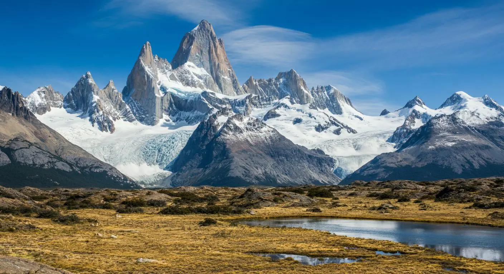

Argentina 🇦🇷
Montañas, glaciares, grandes ciudades y una cultura marcada por la mezcla de pueblos originarios e inmigrantes.
Vestigio oculto: En muchas tradiciones argentinas conviven antiguas creencias indígenas con costumbres europeas.